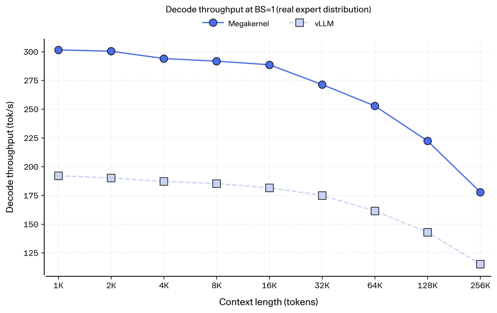
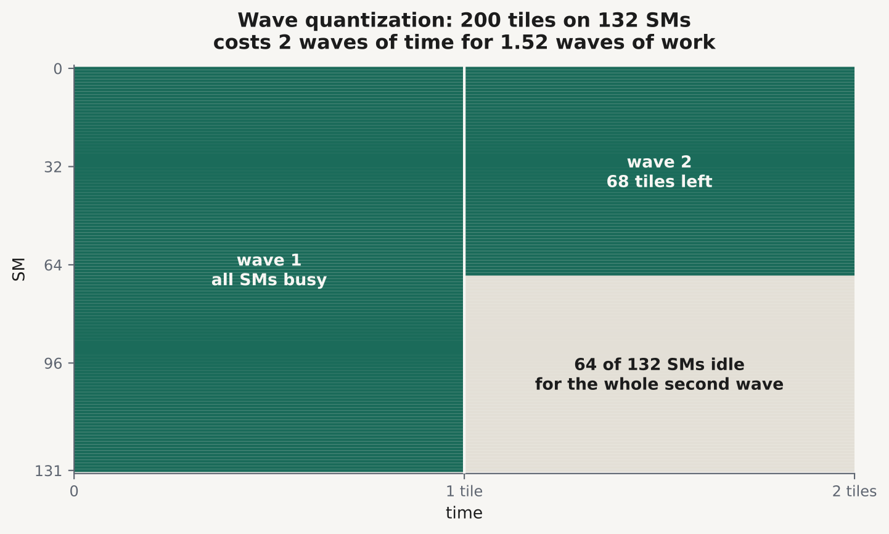
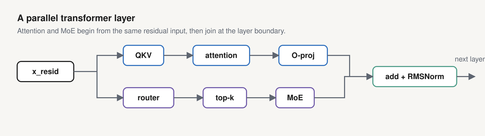
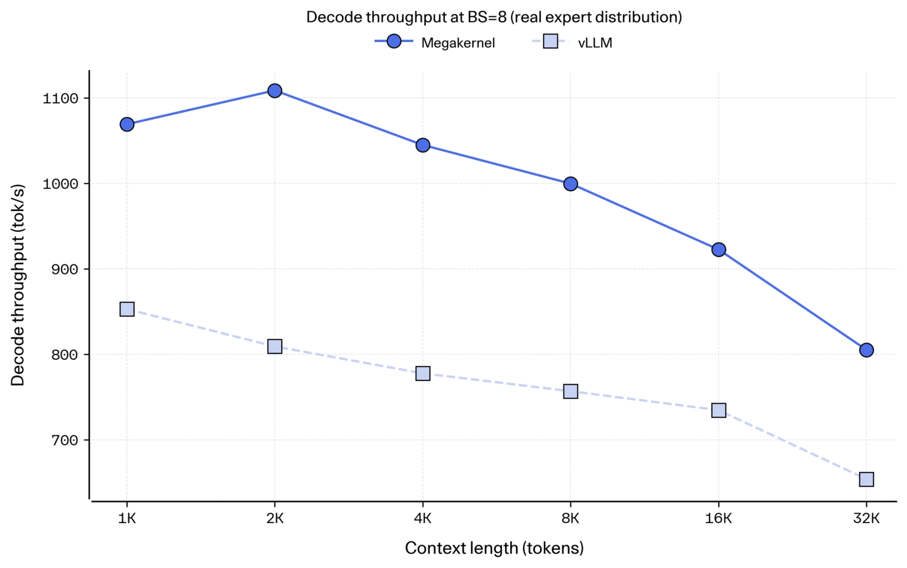

Cohere《Inside the megakernel serving engine for North Mini Code》(本人已读全, 46k)。此文为中文导读与机制重述,偏工程实现; 插图即原文官方图(experiment charts/示意), 不另行画。
解码在低批次时本质是内存受限：每步要从HBM搬大块权重、算得相对少。North Mini Code是30B模型、每token激活3.3B参数，BF16意味着每一步要流过6.6GB权重，8K上下文还要带约0.5GB KV cache。单块H100有3.35TB/s带宽，光速上限SoL大约470 tok/s；vLLM同机只跑出185 tok/s，仅有SoL的39%。Cohere这份新作：用megakernel serving engine服务North Mini Code，把61% 那部分被浪费的带宽捡回来一些。单批次达292 tok/s、62% SoL，= vLLM的1.58x；端到端在AIME/GPQA/MMLU-Pro/SciCode/LiveCodeBench上为1.25x到1.41x，且无精度损失。
GPU上是约100-150个SM各跑同一段program。megakernel把一次前传做成单个常驻kernel：每SM只launch一个threadblock、整个decode步都常驻；驱动不再一步步派活，而是每block去读一份宿主预置在全局内存里的task list。数据依赖不再由kernel边界表达，而用全局内存里由任务自增/自旋等待的整数计数器来细粒度表达。于是调度单元从“整个算子”缩到“算子的一块tile”，同步单元从“整卡”缩到“某个任务依赖的那几个生产者”。
好处一：省掉每两步之间的launch + 全栅barrier开销，这部分它每步只付一次。好处二：消波次量化（wave quantization）。任何kernel若200块tile、132个SM，第一波132、剩下68进第二波就有64个SM空置；GEMM tile形状被矩阵与设计定死，很难刚好整除。megakernel没有需要向上取整的边界，就绪的tile会在任一空闲SM上开始，还能把空闲SM用就绪工作“回填”。

好处三：去掉伪依赖。SM即便负载相同也不会同时完工；kernel边界等于全栅barrier，最慢的SM给所有人定速。megakernel的细粒度barrier让某KV组的输出一落地，它对应该组的O-proj就能开始，MoE down投影也只要对应expert的up投影完成即可，不必等全体expert。好处四：权重预取。权重不变，可提前把权重块从HBM流进shared memory，再等激活；router与QKV会抢在上一层O-proj尾部、RMSNorm还没跑就把自己的权重搬进，吃掉原本浪费的空闲带宽。
此外Cohere的一个关键观察是North Mini Code用的是并行transformer层：attention与MoE前馈两者读同一份归一化输入、只在层末fused residual+norm处汇合，互不依赖对方输出，这让回填可以更激进。
没有编译器、没有新编程范式、没有exotic抽象，就是一个普通CUDA文件。核心是统一calling convention：每个较小kernel都必须用12 warps=3 warpgroups的形状，含8个consumer、1个controller、1个producer、1个storer，角色是编译期tag（if constexpr删掉用不到的代码），每个kernel又从定长32-int task descriptor读参数。整个decode图被降成一个小的tile任务清单：16个opcode覆盖QKV_PROJ/O_PROJ/FFN_x/…、ATTN_DECODE/COMBINE/DRAIN、ROUTER/TOPK/MOEGATHER、Moe up/down drain/combine、ADD_RMSNORM等。

同一份warp-specialized流水承载所有GEMM：producer把激活与权重块喂进shared-memory的stage ring，consumer在tensor core上算MMA，storer写输出tile后到barrier。opcode之间只差一段per-op细节：等哪个barrier、到哪个数、有没有把SiLU×gate或RoPE融进epilogue、store是不是split-K规约。因此新增GEMM只是编辑细节，不是重写load/math/store。解码一条GEMV主路径里典型的standalone核只多了两行：wait_input_bars与arrive_output_bar，加上descriptor里记的barrier目标数和完成要发信号的barrier。任务的controller会预取下一批descriptor进小shared ring；workers别用 __syncthreads（那会连controller一起等），只在排除controller的worker_sync上汇合。
barrier就是全局内存里的整数计数：某个数到达前自旋等待，到达后发出。0(1) 的扇入扇出成本；最难点在计数语义下谁先到够数并不校验身份，一个opcode若多报一次到达，会让warp逐渐漂到别的任务上并在后面死锁，因此barrier记账要显式不变量 + 仔细测试。这套descriptor格式、block形状、计数器协议，就构成了把一个已有算子塞进megakernel的全部集成契约。

kernel只保证正确，吞吐取决于哪个SM在何时跑哪个tile。静态部分：宿主按层构造命名好的wave(qkv、router、attn、moe、oproj…)选定顺序后拍平，把第k个任务交给SM k mod 132。当前默认顺序把router及其设置放attention之前：qkv→router→top-k→route-setup→MoE gather→attention→MoE up/down→O-proj→RMSNorm，让MoE分支提前起步、用非计算密集的routing去配QKV大块让SM更满。交互影响跨整层，难孤立。波次顺序消融：tuned 291 tok/s(batch1)、interleaved 282(-3%)、attention-first 236(-19%)；批量更大差值收窄。作者还试过依赖亲和放法同SM复用cache，反而慢1-2%，release用朴素round-robin。
动态部分用局部work stealing处理宿主不可预知的失衡：完整attention每活请求读的KV长度差很多、router决定各expert拿多少token，只有边跑边知。静态清单里预置少量claimer任务，ATTN_DRAIN/MOE_*_DRAIN原子地从stage的共享队列偷下一块跑到空；claimer数控制并行度，attention队列反映实时活请求。这样静态调度保持稳定，无需每次批次变化重建全清单。早期在稠密模型上做过拓扑感知贪心与数百随机候选暴力搜，都能再多约10%，但MoE的路由使工作动态化、那些稠密调度搬不过去，最终采用了本轮调好的波次顺序+round robin+local stealing；若Blackwell或NVFP4/FP8下简单round robin不够，作者会回头用复杂调度器。
服务端两个长驻宿主线程交接：Python线程是控制面，负责收请求、跑prefill、管KV容量与批次；一个原生C++ 线程独占decode以取最高性能。megakernel跑的是预构建的任务清单，tile数/barrier指标/槽位一早在编译阶段定死，所以Python在要admit、退役或重塑批次前先park decode，等C++ resume时换用与新batch尺寸和上下文匹配的schedule。park/resume是可变批状态的属主边界：prefill会暂停decode，即引擎如今不在单张GPU上混跑prefill与decode。外部它就是OpenAI-compatible接口，带streaming、prefix cache、tool call。当前已知限制：无prefill/decode混合；最大batch 8(配限制非架构限制)；MK纯decode，prefill仍走普通PyTorch核。

对比基线为vLLM v0.24(FA3 attention/Triton MoE)、decode对合成KV、1K输出测吞吐。设置两种路由并有意报较难面：uniform路由下批量1时差距最大（气泡占比高），随batch增大气泡占比降、差距收窄；真实路由下expert命中集中、MoE稀疏、气泡占比更高，收获更大，batch8时真实道路1.32x、uniform只有1.14x：uniform合成会低估真实流量里megakernel的优势，是更难一例。端到端batch8全服务：AIME2025平均decode吞吐935对661(=1.41x)、GPQA 787:631(1.25x)、MMLU-Pro-CS 948:713(1.33x)、SciCode 711:560(1.37x)、LiveCodeBench v6 803:625(1.28x)。精度用SciCode 38.9±1.6%(vLLM 38.2%) 与LiveCodeBench 70.3±1.1% 均接近，7次运行均值，确认内核不损质量。端到端增益(1.25-1.41x)略低于decode-only，因prefill仍普通核且会暂停解码、路由逐批变化、活跃批次在服务中波动。
学到的东西：megakernel起始于简单，无需编译器；对MoE模型在真实流量下收获更大；能很好地嵌进服务器（常驻decode kernel + C++ host环 + Python线程控制）；kernel快起来之后，schedule是剩下那部分加速的关键。业界这套设计源自Hazy Research的Look Ma,No Bubbles（单核前传、达到78% H100带宽），本文另改进了：GEMM强依赖tensor core(wgmma)即使batch1；不用shared-memory paging做权重预取（记账复杂易错），改为每opcode有自己编译期定的warp-specialized流水，重叠来自同型GEMM任务间与GEMM内部(producer在跨SM等激活前先发权重tile载入)。下一步：prefill形状不同、混合prefill/decode批次需要调度器同时推动不打断延迟敏感decode；正在做RTX Blackwell(如RTX Pro 6000与50系)版本并把FP8/FP4量化列上路线，之后把同一方法带去数据中心Blackwell与多GPU推理(tp/ep引入跨设备集合通信这个新同步边界与更多可回收的pipeline bubble)。
参考：https://cohere.com/blog/megakernels